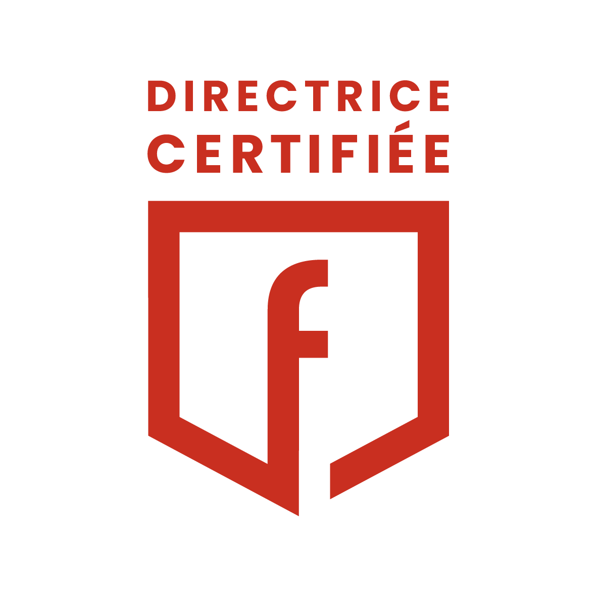

Je m’appelle Pétula Doyon. Depuis plus de dix ans, je navigue à l’intersection de la finance, de la stratégie et du terrain.
Mon parcours débute dans l’hôtellerie — j’ai connu les contraintes de saisonnalité, l’arbitrage des coûts, la quête du RevPAR.
J’ai ensuite intégré une filiale américaine dans le secteur du commerce BtoB de marquage industriel, en tant que Directrice Administrative et Financière – membre du Comité de Direction. Véritable bras droit du dirigeant, j’ai conduit la transformation de la fonction finance dans un environnement international exigeant :
- Pilotage du cash, du BFR et du DSO,
- Clôtures mensuelles et reporting multi-normes IFRS / US GAAP / French GAAP,
- Animation du forecast et du budget, avec suivi des écarts et plans d’action,
- Structuration des process transverses (order-to-cash, procure-to-pay, contrôle interne),
- Coordination des audits (CAC, auditeurs US, experts-comptables).
Mon rôle allait bien au-delà des chiffres : co-piloter la stratégie, soutenir la décision, anticiper les risques et sécuriser la croissance.
Cette expérience m’a forgé une approche globale et pragmatique du pilotage d’entreprise — à la fois stratégique, opérationnelle et orientée résultats.
Ce double contexte — hôtellerie exigeante et industrie structurée — m’a forgé une sensibilité rare : je pense en chiffres, mais je raisonne en hommes, équipes et réalités opérationnelles.
Aujourd’hui, j’interviens comme DAF à temps partagé. Mon credo ? « Vos chiffres doivent vous servir, pas vous épuiser. » Avec moi, pas de jargon inutile ni de promesses creuses. Seulement des plans d’action, des bilans clairs, des décisions éclairées — et une collaboration sur-mesure.
